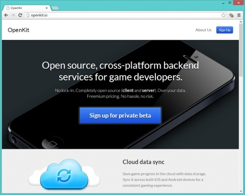

OpenFeint 浴火重生成為 OpenKit

◎本文原載 Linux Pilot，原文章連結按此。
遊戲社交平台 OpenFeint 可謂頭頭碰著黑，先被 Apple 的 Game Center 搶去地盤，被 GREE 收購後最後被解散。但好消息是它以另一種方式重生了，成為了開源的 OpenKit。

不論在 AppStore 者 Google Play 上，競爭最大的都是「遊戲」，開發者在上架後，就要煩惱如何增加曝光率。 OpenFeint 的目的就是將遊戲上的成就與互動做連結，或者分享到 Facebook 、 Twitter 、 Plurk 等網路社平台。 Apple 眼見有利可圖，於是在 iOS 4.1 推出具同等功能的 Game Center 趕絕 OpenFeint 。此時 OpenFeint 終於知道了支援單一平台的壞處了，於是下一版本起開始加入 Android 的支援，但已經為時已晚。被 GREE 收購後， OpenFeint 這個「養子」又因為與 GREE Platform 「正室」子嗣角色衝突，最後被「養父」所殺，於 2012 年 12 月 14 日終止服務。
OpenFeint 關門大吉後， OpenFeint 創始人推出了開源項目 OpenKit 。 OpenKit 將支援 Unity 3D 遊戲引擎，並為 iOS 和 Android 遊戲開發者提供開源 API ，以及儲存、同步遊戲數據等服務， OpenKit 目前提供對 Facebook 、 Game Center 、 Google+ 、 Twitter 、 GREE 等帳號的支援。用戶只需使用 Facebook / Twitter 等第三方社交網路帳號登入，無需另外註冊。其程式碼完全開源，並在 Github 中提供下載。